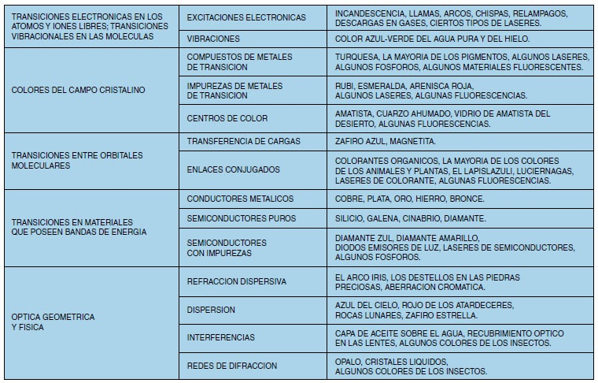

El color es una sensación subjetiva que depende del ojo y de los estímulos que recibe. No todo el mundo tiene la misma capacidad de discernir colores. El estímulo que genera el color en el ojo es la radiación electromagnética. Todas las sustancias emiten radiación electromagnética, y por eso vemos colores por todas partes. Solo deja de haber color cuando no hay radiación electromagnética, es decir, luz. No hay color en la oscuridad.
La razón por la que un objeto, cerámico o no, se ve de un color concreto, puede ser bastante compleja pero, en última instancia, siempre es lo mismo. Los electrones bailando de un sitio a otro.
Los electrones, según la mecánica cuántica, solo pueden encontrarse en ciertos estados energéticos y, cada vez que cambian su estado energético emiten o captan un fotón. Un fotón es radiación electromagnética, o luz, son sinónimos. Los colores que vemos son la suma de todos esos fotones que emiten los electrones.
Por ejemplo, el antimonio es un elemento químico que se utiliza en cerámica para obtener un color que tiene un nombre curioso. Amarillo de Nápoles. El color solo se da en vidriados de plomo porque se forma un compuesto llamado antimoniato de plomo, y resulta que hay saltos electrónicos en el antimoniato de plomo que corresponden a la radiación que genera un estímulo amarillo en el ojo. Lo que quiero decir es que los colores provienen de compuestos cuyos electrones tienen niveles energéticos cuyos saltos coinciden con los estímulos energéticos que necesita el ojo para “ver” esos colores.
En general, un mismo óxido colorante puede servir para generar una amplia gama de colores, no solo uno. Esto sucede porque el óxido colorante puede formar compuestos distintos en distintas bases de vidriado, lo cual genera colores diferentes.
Por si alguien tiene curiosidad, en el cuadro siguiente aparecen las diferentes teorías físicas que explican el color.
